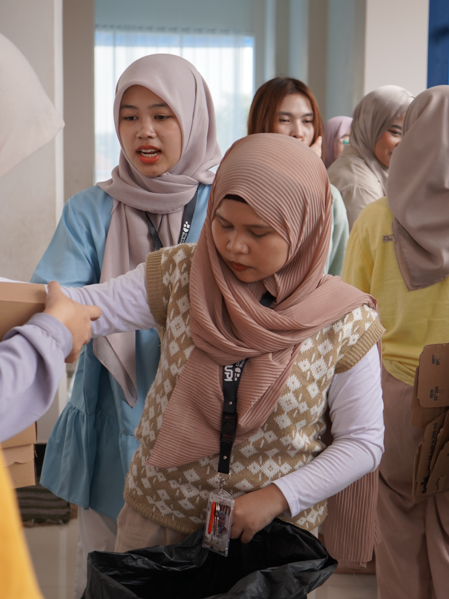

Head of Consumption - DIGIRPO 4.0
Pada acara kaderisasi kampus DIGIPRO 4.0 yang diselenggarakan pada September 2023, saya dipercaya untuk menjadi Ketua Divisi Konsumsi. Dalam peran ini, saya memegang tanggung jawab penuh untuk memastikan seluruh kebutuhan konsumsi peserta, panitia, dan tamu undangan terpenuhi secara tepat waktu serta sesuai standar kualitas acara.

Saya memimpin sebuah tim yang terdiri dari tiga anggota. Untuk memastikan operasional yang efektif, saya menyusun pembagian tugas yang jelas dan adil, sehingga setiap anggota memahami peran dan tanggung jawabnya. Saya juga mengatur sistem koordinasi internal agar persiapan hingga eksekusi di hari acara berjalan lancar.
Sebagai ketua divisi, salah satu tugas utama saya adalah merencanakan dan mengelola anggaran konsumsi. Saya melakukan perhitungan kebutuhan secara komprehensif, mencakup makanan utama, kudapan, minuman, hingga perlengkapan pendukung. Proses ini melibatkan survei dan pemilihan vendor, negosiasi harga, serta monitoring pengadaan agar tetap sesuai anggaran tanpa mengurangi kualitas.
Pada hari pelaksanaan DIGIPRO 4.0, saya dan tim bertanggung jawab menyediakan dan menyajikan konsumsi untuk 90 peserta, 80 panitia, dan 15 tamu undangan. Pekerjaan ini membutuhkan ketelitian tinggi dalam manajemen waktu, kemampuan adaptasi terhadap perubahan mendadak, serta komunikasi lintas divisi yang efektif.
Pengalaman ini mengembangkan kemampuan saya dalam leadership, budget management, operational planning, dan team coordination. Saya juga belajar menangani tantangan logistik skala besar sambil menjaga stabilitas kerja tim dan memastikan kelancaran acara secara keseluruhan.